F01 / Cover — layout reference only
CONTAINS REJECTED INVENTED CHOG · NOT TOKEN ART
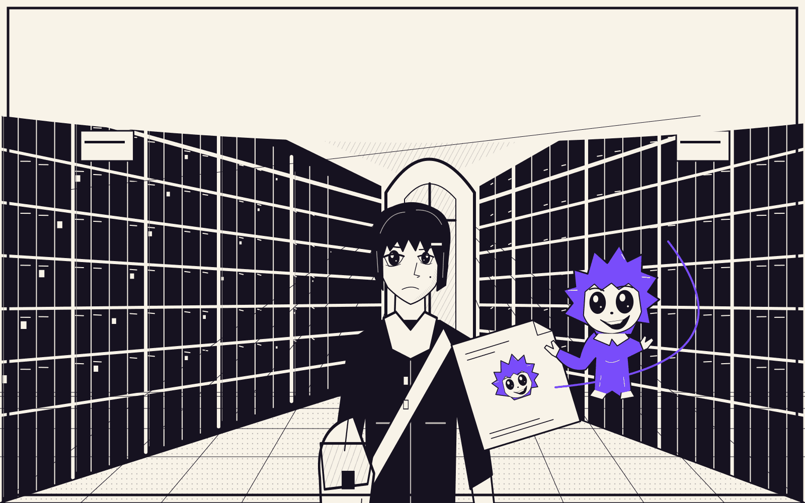

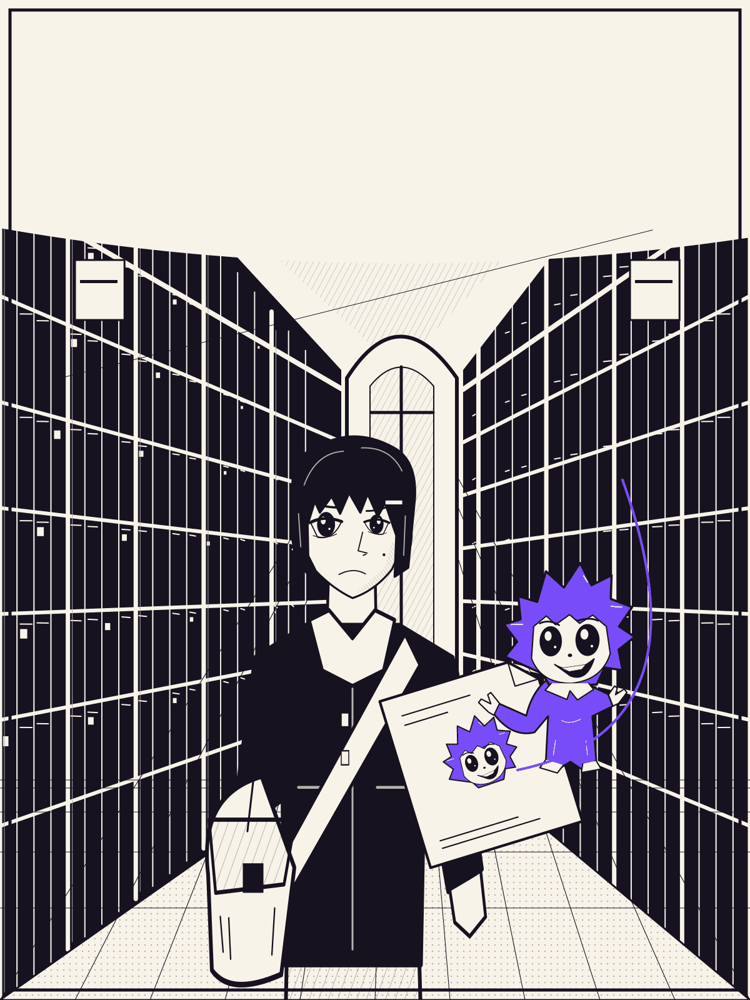
CHOG / 1969 · reference archive · PR #8 review response
Chain's four authentic candidates are ready for user choice: onchain 1969 / CHOG #1461, 969 / CHOG #461, 42 / CHOG #1503, and 1968 / CHOG #1460. None is selected. Media inspected the gallery/traits and matched all four 1000×1000 WebP originals to Chain's recorded hashes. Next: user choice, source/trait and rights review, then one approved cinematic awakening production method. No remaining scenes or paid generation are authorized.
Current production brief: docs/HERO_SCENE_APPROVAL.md. Original images below are intentionally unchanged; their old embedded wording does not override this notice or the canonical NFT rule. This is an offline reference document, not the product or a candidate gallery.
Neri, Sera and Rook remain original human characters. Preserve identity and wardrobe while improving anatomy, expression, cloth, hands and cinematic staging. These sheets are not approved final panels.
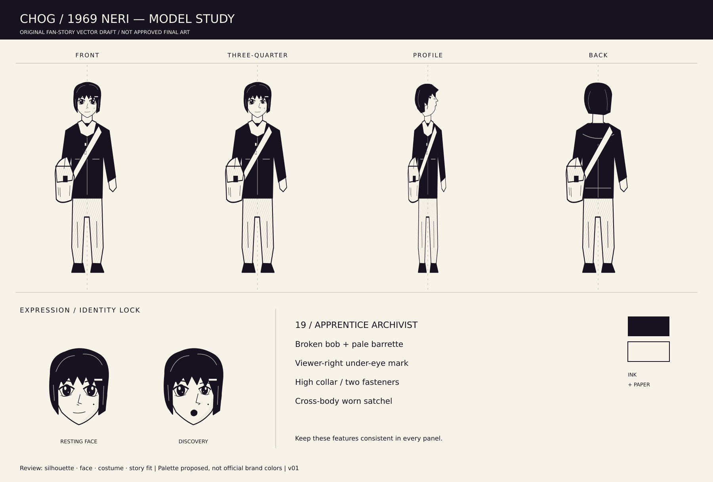
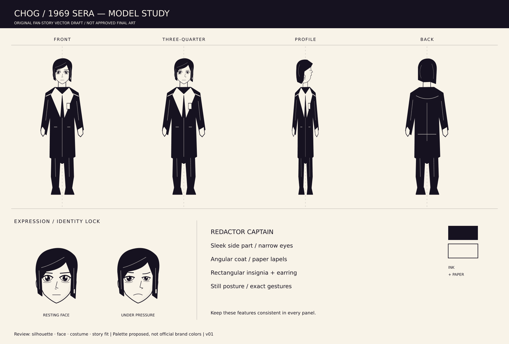
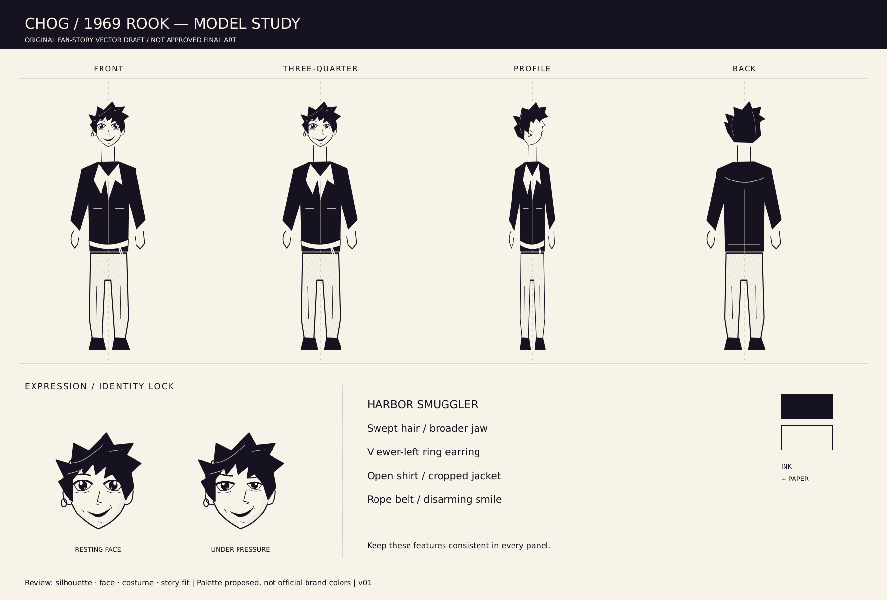
This fabricated design is retained only to document the rejected first pass. Do not reproduce its traits, upload it as a selected-NFT reference, or integrate it. Actual traits come from the user's chosen verified token.
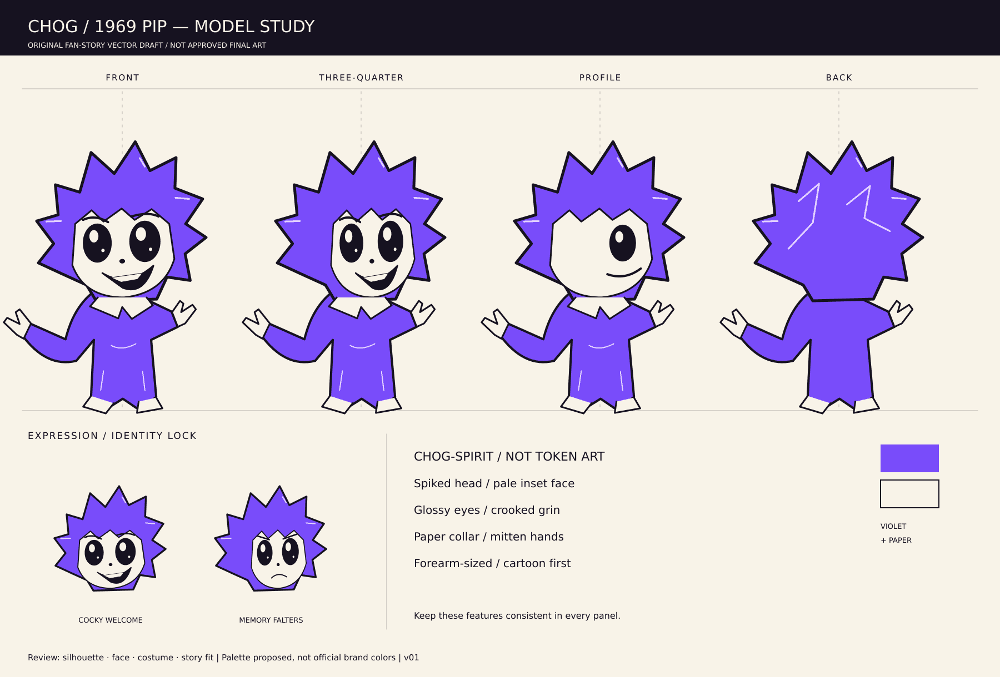
All four compositions remain unchanged as requested. Archive and Neri close-up are schematic human/environment references. Cover and awakening contain the rejected invented creature. None is approved for final integration. Original historical contact sheet — its embedded approval-pending label is outdated.


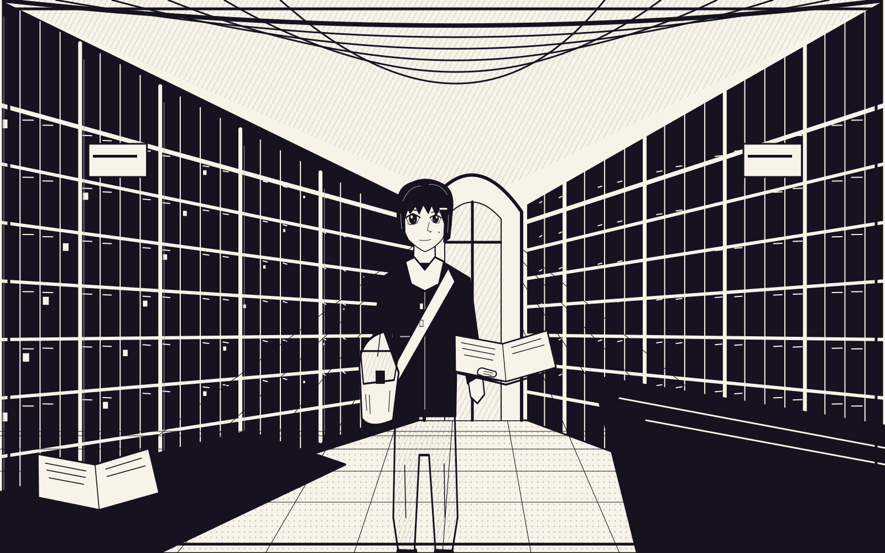
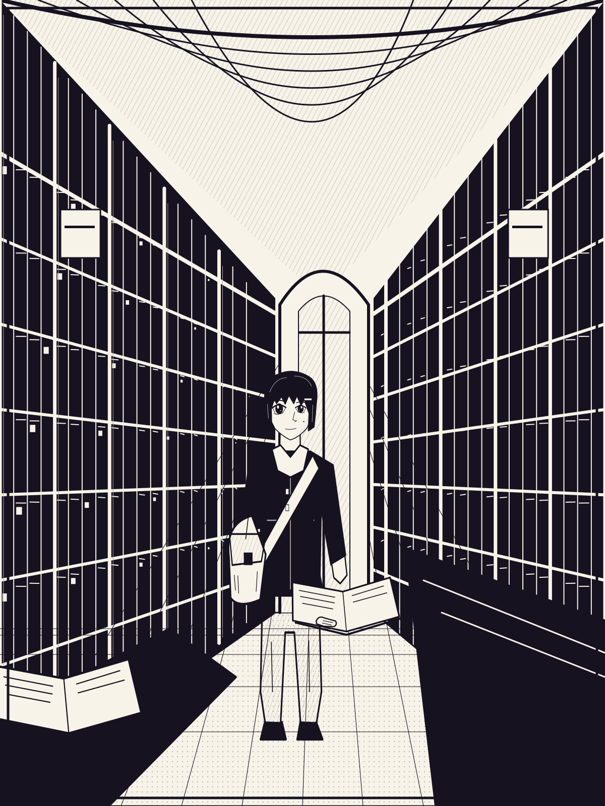
The original question and human design remain references; final acting and drawing must be significantly more expressive.
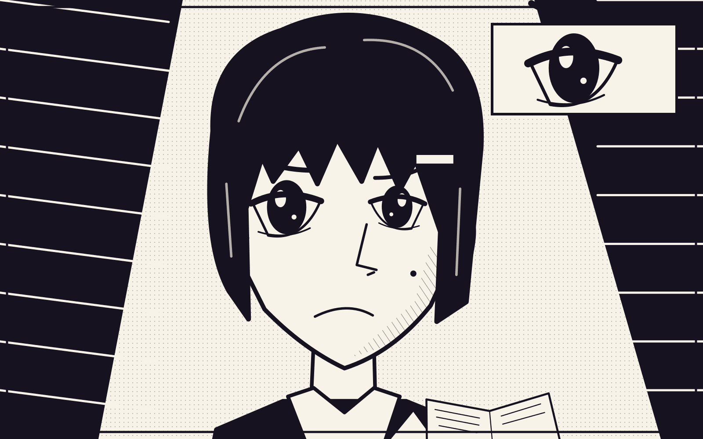
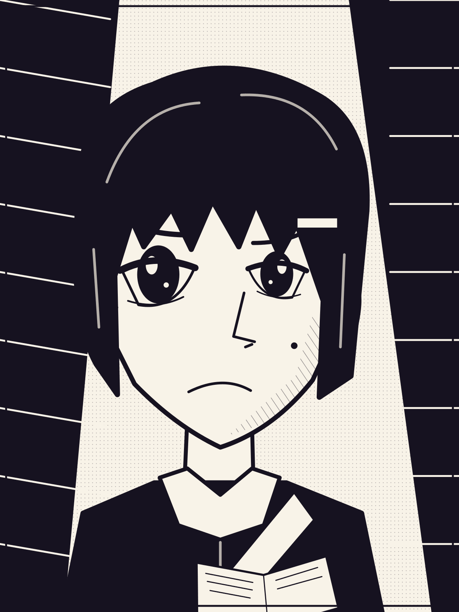
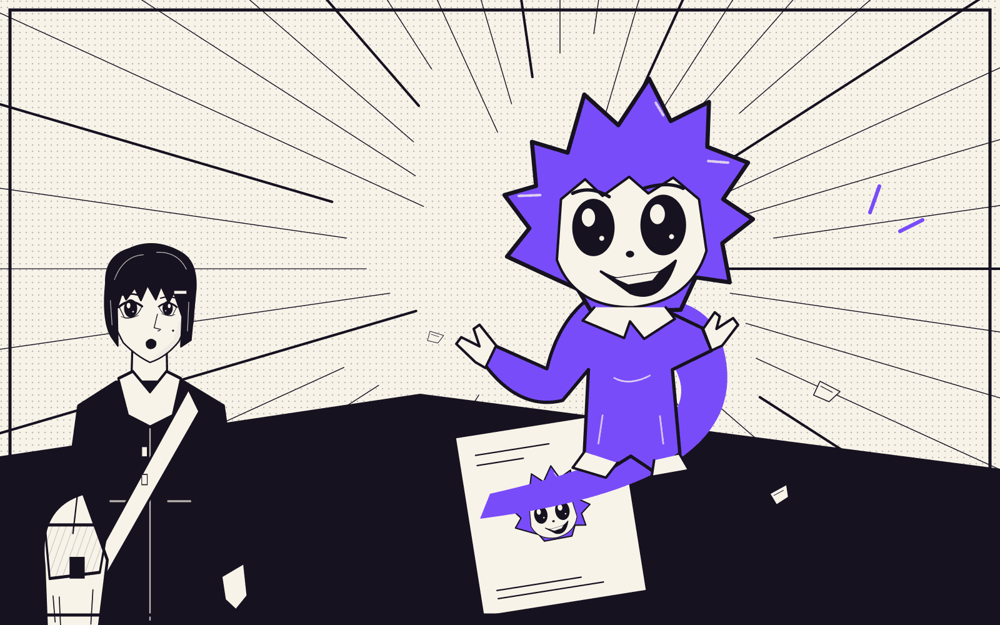
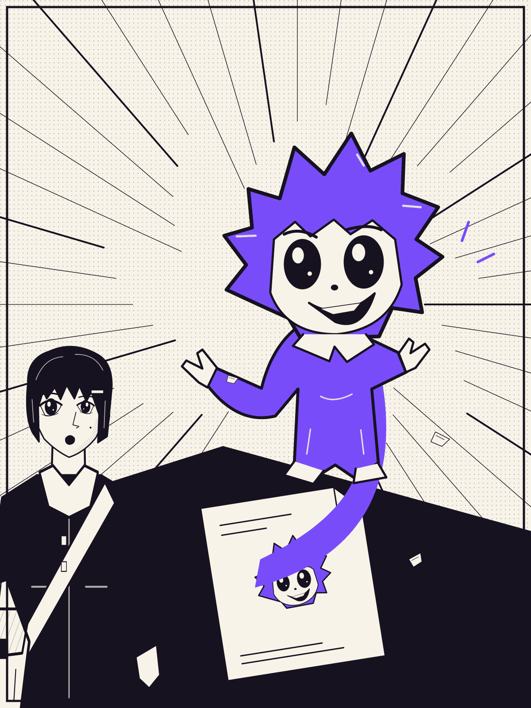
Held: hero rendering, remaining scenes, voice synthesis, music, final video, integration and deployment. Token choice is not art approval, a copyright license or permission to spend.